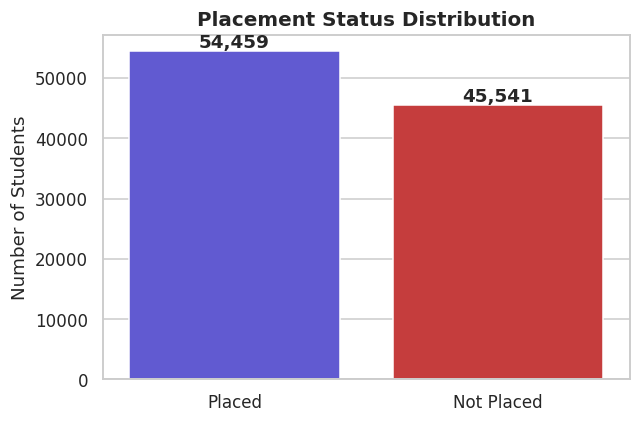
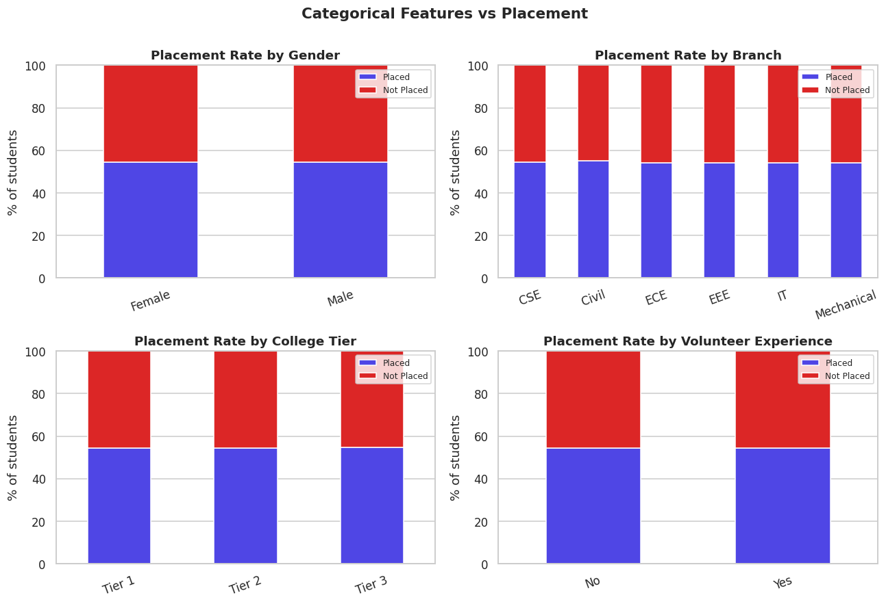
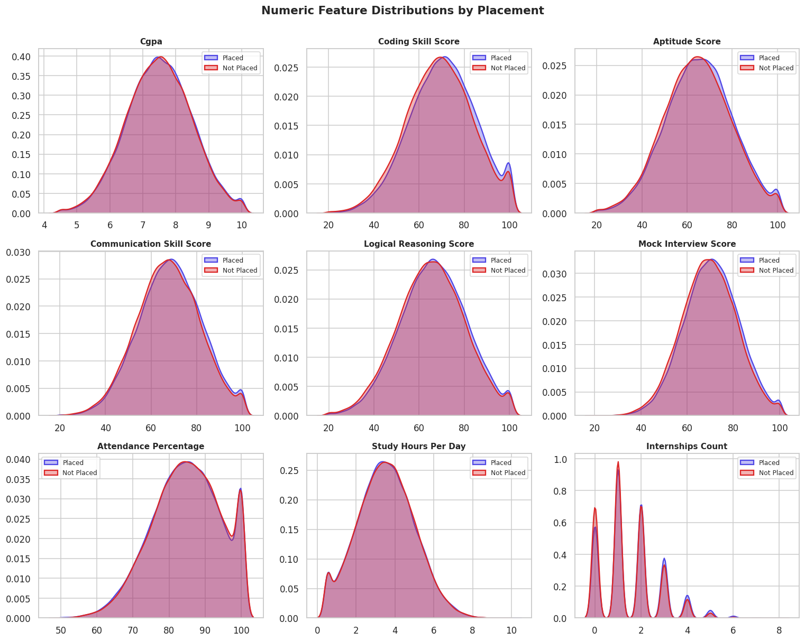
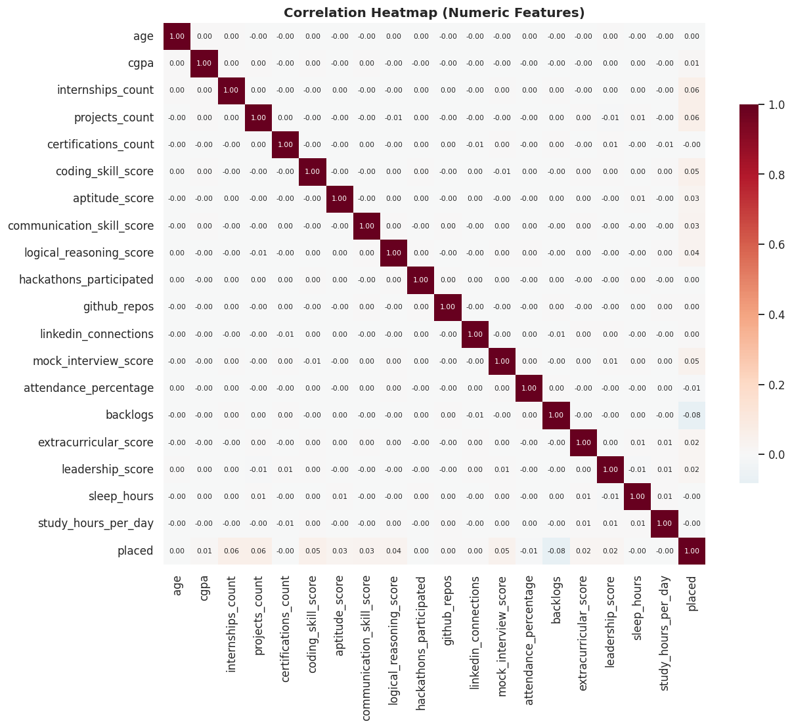
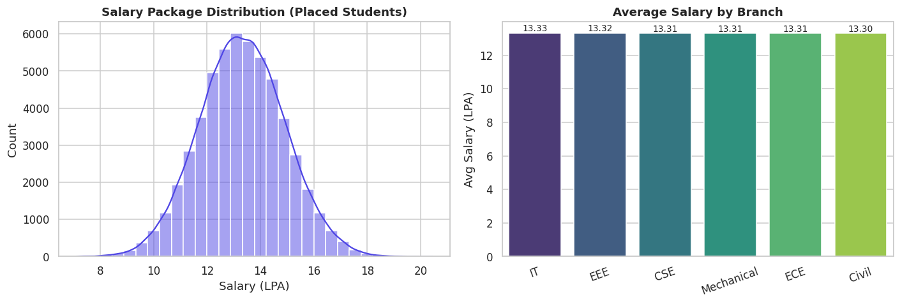
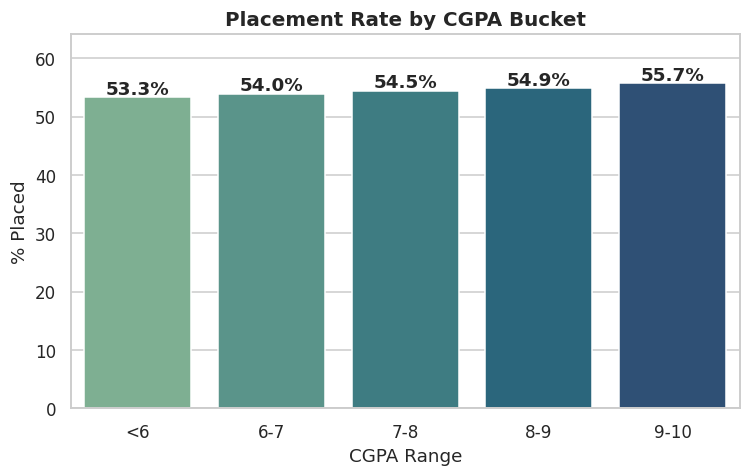
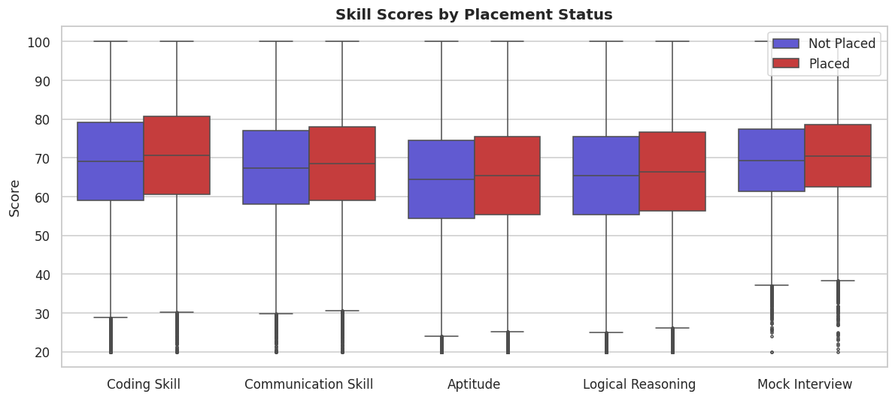
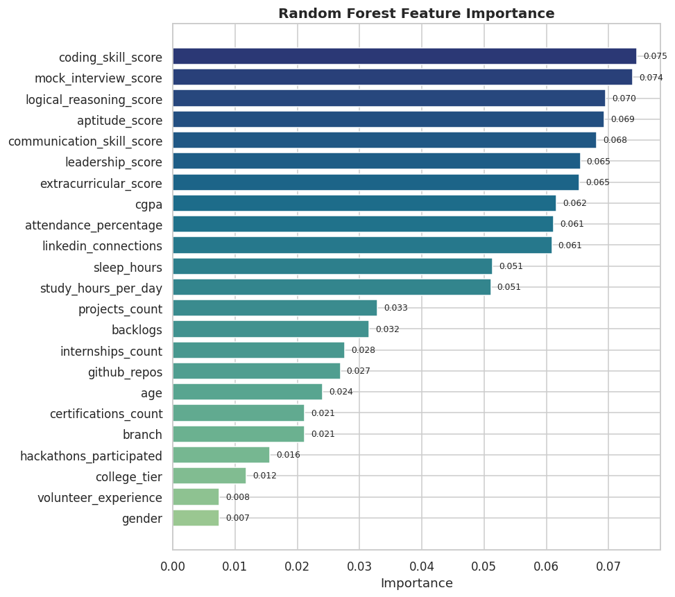
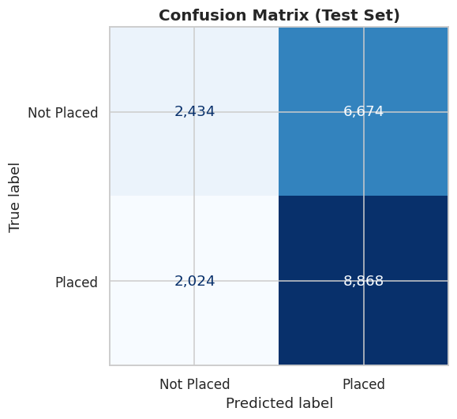

1. Placement Status Distribution
Class balance between Placed and Not Placed students.

Predict placement outcomes with a Random Forest model trained on academic, skill, and engagement features. Switch to the Analysis tab for the data-mining EDA.
Exploratory data analysis on 100,000 student records. Each chart is
generated by notebook/generate_plots.py using
matplotlib and seaborn.
Class balance between Placed and Not Placed students.

Stacked percentage bars for gender, branch, college tier, and volunteer experience - shows which categories favour placement.

Kernel density estimates split by class for the most informative numeric features.

Pairwise Pearson correlations across numeric features and the encoded placement target.

Salary distribution among placed students and average package broken down by branch.

Percentage of students placed within each CGPA range.

Side-by-side boxplots compare the distribution of each skill score for Placed vs Not Placed students.

Which features the model relies on most when predicting placement.

Counts of true vs predicted placement labels on the held-out 20% test split.
